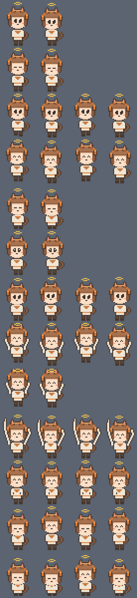

桌宠 DeskPet
一只待在 Windows 桌面上的兽耳小人：会自己乱跑、能被拖来拖去、会定时提醒你休息。 你听歌的时候它会戴着耳机一起听——听得出安静段落和副歌，会跟着音量蹦， 还会跟着歌词一起唱。
它会做什么
| 陪你听歌 | 抓系统正在播的声音做频谱分析，按段落换动作 |
|---|---|
| 跟着唱 | 认出歌名后去找带时间轴的歌词，到点了挑几句唱出来 |
| 小房间 | 屏幕右侧挂着一间小屋，拖进去它就住下，只在屋里踱步；困了自己走到床垫那头躺下，饿了走到食盆边蹲着吃 |
| 拖拽 | 按住左键拖走，松手会掉下来落到桌面底部；甩出去还会滑一段 |
| 番茄钟 | 25 分钟专注 + 5 分钟休息，到点冒气泡喊你 |
| 随机说话 | 隔一阵冒一句，内容全在配置文件里，想让它说什么就往里加 |
| 睡觉 | 太久没人理就自己睡了，双击叫醒 |
听歌的时候它在干嘛
它是真的在「听」：用 WASAPI 环回把系统正在播放的声音抓回来做频谱分析， 所以知道的不只是「有多大声」，还有「什么声音」。
| 听到什么 | 它做什么 |
|---|---|
| 安静的段落 | 轻轻摇摆，偶尔小声哼一句 |
| 普通段落 | 扭腰跳舞、拍手、甩头、打碟，换着来 |
| 副歌（能量持续很高） | 举起手蹦蹦跳跳，话也变得很兴奋 |
| 音量突然拔高 | 当场腾空蹦一下 |
| 音色亮（高频多） | 音符冒得更密，会说「这段亮晶晶的！」 |
| 鼓点重（低频强） | 跟着咚咚点头，会说「地板都在震！」 |
同一段音乐里每隔 4~9 秒会换一个花样，不会一个动作循环到底。 耳机和头顶的光环在放歌时会变亮，一眼就能看出它在听。
踩过的坑
置顶窗口会互相盖住，小人看起来凭空消失
小人和小房间是两个独立的置顶窗口，而 Windows 会把「被点到的那个」抬到同层最前面。 所以光是按住房间准备拖，就足以让不透明的房间盖住小人。 解法是房间每次被碰到都回调一次重排，把顺序压回「房间 → 小人 → 气泡」，另外每秒自查一次兜底。
歌词整首都偏，因为起算点选错了
播放器换歌时是先改标题、再出声的，中间差着零点几秒到一秒。 一开始拿「标题变了的那一刻」当歌曲开头，结果整首歌的歌词都往前偏。 改成以「声音真正响起来的那一刻」起算才对得上。
网易云根本不往系统媒体接口注册
Spotify、浏览器里的 B 站走 Windows 的 SMTC 接口，能拿到歌名和播放进度； 网易云这类播放器压根不报。退路是读它的窗口标题——就是「歌名 - 歌手」。
但标题给不了播放进度，于是再退一层：如果这首歌是在桌宠眼皮底下起头的 （靠「歌名出现之前那几秒是安静的」判断），就从那一刻自己数秒； 要是启动时歌已经放到一半，就这首不唱——宁可不唱，也不唱错。
形象是怎么画的
32×44 像素，窗口里整数放大 3 倍。两头身、大眼、粗描边、平涂色， 画法参考明日方舟基建小人那类 Q 版像素立绘，角色是原创的。
没有用画图软件——整个形象是写在 Python 源码里的字符画，一个字符等于一个像素，
'.' 表示透明：
LEG = Grid.from_ascii([
"ollo", # o=描边 l=裤子
"ollo",
"ollo",
"offo", # f=鞋
"oooo",
])好处是改动作不用重画整张图，挪一下各部件的位移就行； 打错的字符会在预览图里画成红色，一眼能看见。

怎么跑
依赖全是可选的，装了功能更全；一个都不装也能跑，只是不跟着声音动。
python -m pip install -r requirements.txt
python main.py